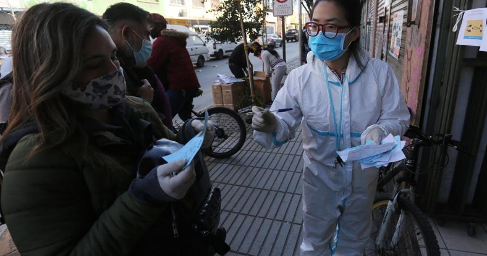
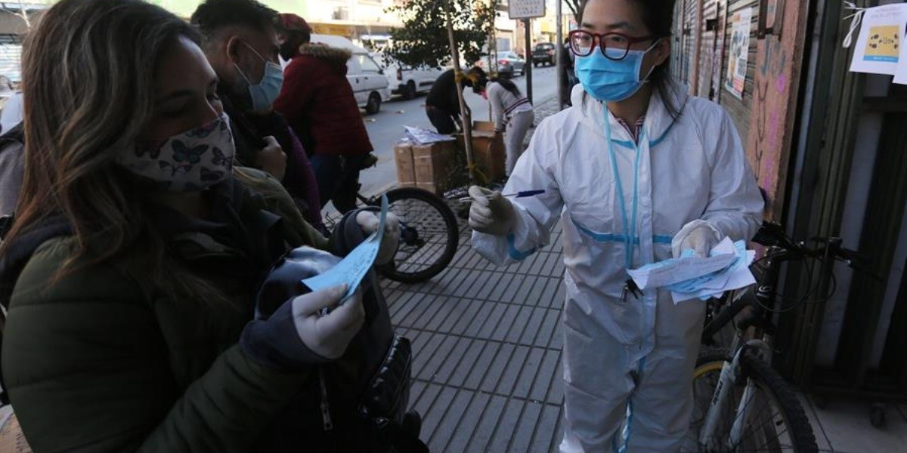

Cubreboca no sustituye al distanciamiento; es necesario estar 2 metros alejados: CDC
Las mascarillas no reemplazan la práctica del distanciamiento social.Es necesario utilizar mascarilla además de permanecer al menos a 6 pies (1.8 metros) de distancia de las demás personas', señaló.(EFE)' src='https://www.elimparcial.com/__export/1608147774387/sites/elimparcial/img/2020/12/16/750bc5c80b08c305eea5af9e7bcb110ac3a06009w.jpg_851672003.jpg'>

Posted On: 2020-12-16T12:34:00
Posted By: El Imparcial

Content Date: 2020-12-16
Download Date: 2021-04-21
Document ID: L0C04AKF0